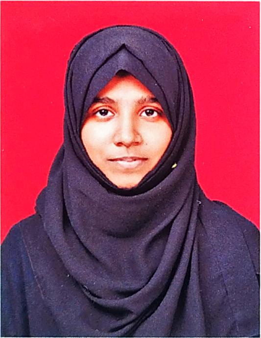

Mariyam Shahin

Summary
Seeking a position to utilize my skills and abilities in any industry that offers professional growth while being resourceful, innovative and flexible.
Education
Elementary Schooling: 92.48%
St. Agnes School (05/2004-03/2017)
Pre-University: 91.83%
St. Agnes Pre-University College - PCME (06/2017-03/2019)
Bachelor of Engineering: 8.88 CGPA
Sahyadri College of Engineering and Management - BE in Computer Science (07/2019-05/2023)
Work Experience
Fresher
Internships
PlagZero (02/2023-03/2023)
Java Full Stack Development
Skills
HTML, CSS, PHP, Java, Python, JavaScript, C, C++, MySQL.
Certificates
Linux Tutorial (08/2021)
Great Learning Academy
Projects
- Blood Donation Management System (09/2021-01/2022)
Role: Application Development - Front End (Java) and Back End (MySQL)
- The Survivors Of Ttitanic (04/2022-07/2022)
Role: Computer Graphics (C Language)
- Food Donation App (04/2022-07/2022)
Role: Mobile Application Development - Front End (Java) and Back End (MySQL)
- Detecting Depression in Voice Signals usind DL Algorithm (10/2022-02/2023)
Role: Artificial Intelligence and Machine Learning - Convolutional Neural Network (CNN) and Artificial Neural Network (ANN)
- Result Management System (02/2023-03/2023)
Role: Java Full Stack Application
Achievements
Participated in Amalthea'19 Event organised by Indian Institute Of Technology (IIT), Gandhinagar.
Others